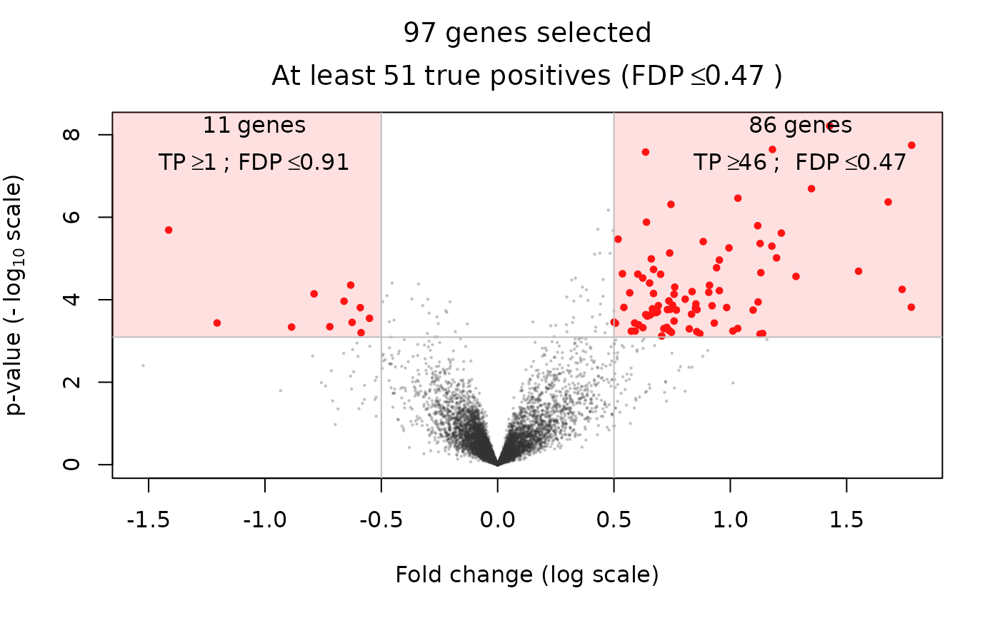

Basic methods for class SansSouci
nHyp: get the number of hypotheses
nObs Get the number of observations
label Get the label of a post hoc method
Print 'SansSouci' objects
pValues: get p-values
thresholds: get thresholds
# S3 method for SansSouci nHyp(object) # S3 method for SansSouci nObs(object) # S3 method for SansSouci label(object) # S3 method for SansSouci print(x, ..., verbose = FALSE) # S3 method for SansSouci pValues(object) # S3 method for SansSouci foldChanges(object) # S3 method for SansSouci thresholds(object)
| object | An object of class |
|---|---|
| x | An object of class |
| ... | Not used |
| verbose | Should detailed output be printed? Defaults to FALSE |
data(expr_ALL, package = "sansSouci.data") groups <- ifelse(colnames(expr_ALL)=="NEG", 0, 1) table(groups) #> groups #> 0 1 #> 42 37 a <- SansSouci(Y = expr_ALL, groups = groups) print(a) #> 'SansSouci' object: #> Number of hypotheses: 9038 #> Number of observations: 79 #> 2-sample data #> nHyp(a) #> [1] 9038 nObs(a) #> [1] 79 label(a) #> NULL res <- fit(a, B = 100, alpha = 0.1) #> Warning: the condition has length > 1 and only the first element will be used label(res) #> [1] "Simes" print(res) #> 'SansSouci' object: #> Number of hypotheses: 9038 #> Number of observations: 79 #> 2-sample data #> #> Parameters: #> Test function: rowWelchTests #> Number of permutations: B=100 #> Significance level: alpha=0.1 #> Reference family: Simes #> (of size: K=9038) #> #> Output: #> Calibration parameter: lambda=0.1210904 str(pValues(res)) #> Named num [1:9038] 0.9647 0.5203 0.9516 0.8438 0.0045 ... #> - attr(*, "names")= chr [1:9038] "ENSG00000000003" "ENSG00000000419" "ENSG00000000457" "ENSG00000000460" ... str(foldChanges(res)) #> Named num [1:9038] -0.0044 0.09394 -0.00426 -0.00886 0.27775 ... #> - attr(*, "names")= chr [1:9038] "ENSG00000000003" "ENSG00000000419" "ENSG00000000457" "ENSG00000000460" ... str(thresholds(res)) #> num [1:9038] 1.34e-05 2.68e-05 4.02e-05 5.36e-05 6.70e-05 ... volcanoPlot(res, q = 0.05, r = 0.5) 